| [ Team LiB ] |
|
14.6 DecouplingWe have seen the problems with control-loop interaction; these occur because a manipulated input affects more than one controlled output. One approach to handling this problem is known as decoupling. The idea is to develop "synthetic" manipulated inputs that affect only one process output each. This approach is illustrated in Figure 14-9. Figure 14-9. Decoupling control strategy—synthetic inputs and process outputs.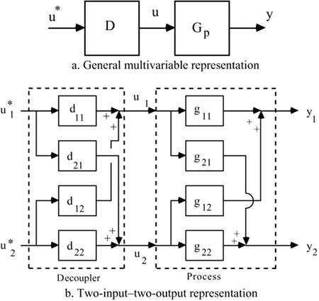 The relationship between the synthetic input vector and the process output vector is 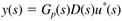 For a two input–two output process, 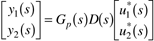 where Gp(s)D(s) is a 2 x 2 transfer function matrix. There are a number of possible choices for the "target" Gp(s)D(s) matrix. Two common ones lead to ideal decoupling and simplified decoupling. Ideal DecouplingOne possible choice for Gp(s)D(s) is 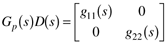 Solving for D(s), we find 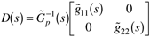 where we use the (~) notation to make it clear that these calculations are performed based on a process model. The relationship between the synthetic inputs and process outputs, y(s) = GP(s)D(s)u*(s), that results is 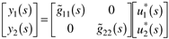 and we see that each synthetic input affects only one process output (assuming a perfect model). 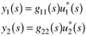 The main advantage is that independent SISO tuning parameters can be used for each control loop. A major disadvantage is that the resulting decoupler is the inverse of the process transfer function matrix. There are numerous problems with this approach, including the fact that the decoupler will be unstable if there are RHP transmission zeros associated with the process transfer function matrix. Also, this type of decoupler is known to be extremely sensitive to model error. Simplified DecouplingAn alternative approach, known as simplified decoupling, is shown for a 2 x 2 example in Figure 14-10. Here, the decoupling matrix is restricted to the form 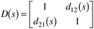 Figure 14-10. Simplified decoupling control strategy—synthetic inputs and process outputs.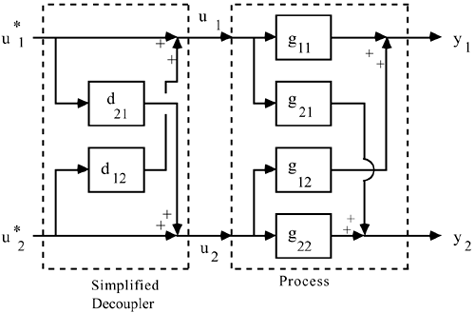 Here, we specify a decoupled response and the decoupler with the structure in Equation (14.26), 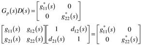 and we can solve four equations in four unknowns to find 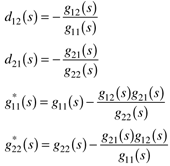 Notice that the decoupling elements (d12 and d21) are the same as the feed-forward control design presented in Chapter 10. The effect of the synthetic inputs are being "fed-forward" to minimize control loop interaction. Similar to feed-forward control, some factorization of the decoupling elements must be performed to make certain that they are stable and physically realizable. The feedback control diagram for simplified decoupling is shown in Figure 14-11. Whether ideal or simplified decoupling is being implemented, the result is a true multivariable strategy, as shown in Figure 14-12. Figure 14-11. Feedback control using simplified decoupling.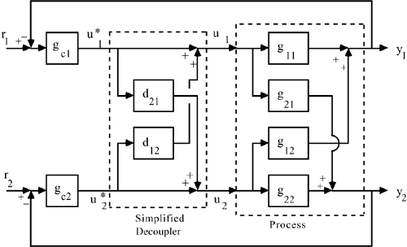 Figure 14-12. Illustration of multivariable control using decoupling.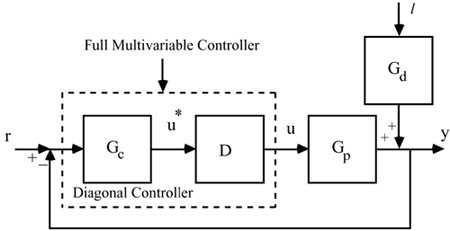 Static DecouplingIn practice, static decoupling (based on steady-state gains) is used much more often than dynamic decoupling, since the dynamic version may not be physically realizable, or the dynamic parameters may be too uncertain. In this case, simply set s = 0 in the decoupling equations. |
| [ Team LiB ] |
|